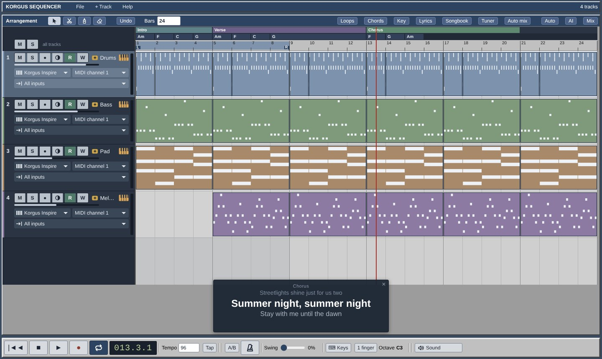
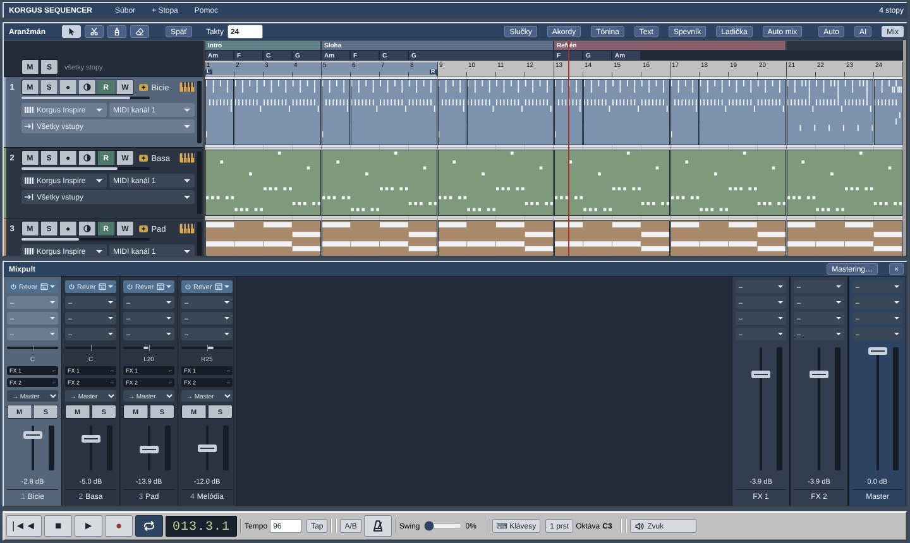

Korgus Sequencer je jednoduchý program na tvorbu piesní pre Windows. Nahraj spev, nechaj si navrhnúť akordy, vlož text a hotovú pieseň ulož ako MP3 alebo video na TikTok – bez zložitého učenia.Korgus Sequencer is a simple songwriting program for Windows. Record vocals, get chord suggestions, add your lyrics and save the finished song as an MP3 or a TikTok video – no steep learning curve.
Stiahnuť pre WindowsDownload for Windows

Od prvého nápadu po hotovú nahrávku na jednom mieste. Ovládanie inšpirované klasickým Cubase, len oveľa jednoduchšie.From the first idea to a finished recording in one place. Controls inspired by classic Cubase, only much simpler.
Spev a nástroje cez mikrofón alebo zvukovú kartu (aj ASIO). Viac nahrávok tej istej pasáže, punch in/out medzi lokátormi.Vocals and instruments via microphone or audio interface (ASIO too). Multiple takes, punch in/out between locators.
Vyber náladu a tóninu – program navrhne akordy, melódiu a basu. Akordy jedným prstom na klávesoch.Pick a mood and key – the program suggests chords, melody and bass. One-finger chords on your keyboard.
Text sa počas nahrávania posúva ako na teleprompteri. Časy riadkov nastavíš ťukaním a uložíš ako .lrc.Lyrics scroll like a teleprompter while you record. Set line timing by tapping and save it as .lrc.
Mixpult s efektmi, automatický mix stôp a mastering asistent, ktorý dorovná hlasitosť pre Spotify či TikTok.Mixer with effects, automatic track mix and a mastering assistant that matches loudness for Spotify or TikTok.
Odšumenie, jemné doladenie a efekty na hlas naraz. Ladička a doladenie spevu (autotune) sú v programe.Denoise, gentle tuning and vocal effects at once. Built-in tuner and vocal pitch correction.
Export MP4 9:16 s vizualizáciou a karaoke titulkami a k tomu MP3 – jedným klikom.Export a 9:16 MP4 with visualisation and karaoke subtitles plus an MP3 – in one click.
Oddelenie spevu od hudby, rozloženie na 4 stopy, rozpoznanie akordov, tempa a tóniny z nahrávky.Separate vocals from music, split into 4 stems, detect chords, tempo and key from a recording.
Krokový sekvencer bicích, knižnica rytmov a basových liniek, slučky zo Splice prispôsobené tempu piesne.Drum step sequencer, rhythm and bass line library, Splice loops matched to the song tempo.
Text piesne s akordmi nad riadkami na vytlačenie alebo poslanie muzikantom.Lyrics with chords above the lines, ready to print or send to your band.
Nemusíš byť hudobník. Program ťa vedie a robí za teba to, čo by inak trvalo hodiny.You don't have to be a musician. The program guides you and does what would otherwise take hours.



Vstavané efekty, podpora VST3 pluginov a nástroje, ktoré poznáš z veľkých programov.Built-in effects, VST3 plugin support and tools you know from the big programs.
Za pár minút nahráš prvú pieseň.Record your first song in a few minutes.
Inštalátor nepotrebuje administrátora. Nové verzie si program stiahne sám.The installer needs no admin rights. The program downloads new versions by itself.
Krátky sprievodca ti ukáže, kde je nahrávanie, akordy, text a export.A short guide shows you where recording, chords, lyrics and export are.
Nahraj, zmixuj a ulož ako MP3 alebo video na TikTok jedným klikom.Record, mix and save as MP3 or a TikTok video in one click.
Windows 10 alebo 11, 64-bit. Stačí bežný počítač; na nahrávanie odporúčame slúchadlá na kábli.Windows 10 or 11, 64-bit. An ordinary PC is enough; for recording we recommend wired headphones.
Áno, program načíta VST3 nástroje a efekty. Ak niektorý plugin spôsobí pád, program si ho zapamätá a pri ďalšom spustení ho nenačíta.Yes, the program loads VST3 instruments and effects. If a plugin crashes, the program remembers it and skips it on the next start.
Pri spustení skontroluje novú verziu a ponúkne aktualizáciu. Po kliknutí sa sám nainštaluje a znova spustí.On start it checks for a new version and offers an update. One click installs it and restarts the program.
Áno, program je po slovensky aj po anglicky a jazyk sa dá prepnúť.Yes, the program is available in English and Slovak and the language can be switched.
Áno. Pri nahrávaní hrajú všetky ostatné stopy a ty nahrávaš na stopu, ktorá má zapnuté ●.Yes. While recording, all other tracks play and you record onto the track with ● turned on.
Stiahni Korgus Sequencer a začni tvoriť ešte dnes.Download Korgus Sequencer and start creating today.
Stiahnuť pre WindowsDownload for Windows